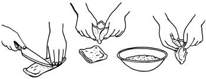

From The Book of Tofu, copyright 1975 by William Shurtleff and Akiko Aoyagi. Excerpts used by permission of Autumn Press, Inc.
In MOTHER NOS. 41 and 42, Bill Shurtleff and Akiko Aoyagi (see the Plowboy Interview in MOTHER NO. 44) explained the art of making and serving tofu. Below, the authors teach us how to prepare this nutritious-and inexpensive-food yet another way: deep-fried tofu.
Three types of deep-fried tofu are prepared in most Japanese (and many American) tofu shops: thick agé (pronounced ah-gay ), whole cakes of regular tofu which have been pressed and deep-fried; ganmo, deep-fried burger-shaped patties or small balls of firmly pressed tofu containing minced vegetables and sesame seeds; and age?L, small pouches or puffs of deep-fried tofu that can be filled with salads, grains, cooked vegetables, or other stuffings.
Many Japanese chefs and tofu masters are of the opinion-with which we agree-that of the various types of tofu, deep-fried tofu may be most suited to Western tastes and cooking. All three varieties have a distinct, hearty flavor, golden-brown color, and firm, meaty texture that remind some of fried chicken. In fact the word ganmo actually means "mock goose", and this tasty tofu was originally developed by chefs who longed for the flavor of wild goose meat, a delicacy once forbidden to all but the Japanese nobility.
Deep-fried tofu can be used as a delicious and inexpensive substitute for meat in a remarkably wide variety of recipes. Grilled or broiled, it has a savory barbecued aroma; added to casseroles, sautéed vegetable dishes, or curry and spaghetti sauces, it adds body, texture, and plenty of protein; served in sandwiches, egg dishes, or atop pizzas, it may be used like cold cuts or bacon; and when frozen, its structure undergoes a total change, making it even more meatlike, tender, and absorbent.
Because the processes of pressing and deep-frying greatly reduce the water content in this tofu, it will stay fresh for long periods of time without refrigeration. Thus it is well suited for use in lunch boxes or on picnics and hikes, even during the warm summer months.
In addition to imparting a rich flavor and aroma to tofu, the process of deep-frying also adds highly digestible polyunsaturated fats, usually from either rapeseed or soy oil. Thus when deep-fried tofu is used in place of meat, it serves as a source of the fatty acids necessary for a balanced diet and simultaneously helps to reduce the intake of saturated fats.
All varieties of deep-fried tofu are rich in protein: thick age?L, ganmo, and age?L contain respectively 10.1, 15.4, and 18.6 percent protein by weight. Thus both ganmo and age?L have a higher percentage of protein than either eggs or hamburger (which have 13 percent each). A typical 5-ounce serving of thick age?L, for example, provides about one-third of the daily adult requirement of usable protein.
Deep-fried tofu-like most deep-fried foods-is at its very best just after being prepared, while still crisp and sizzling. And each of the three basic types can easily be prepared at home from regular tofu.
Dousing removes excess oil from the surface of deep-fried tofu, making the tofu lighter, easier to digest, and more absorptive of dressings and seasoned broths. Some cooks always douse deep-fried tofu, while others find the results are not worth the time and effort. Generally, we hold to the latter point of view. But if you are on a low-fat diet, douse!Place uncut pieces of deep-fried tofu in a strainer or colander. Bring 2 or 3 cups of water to a boil in a saucepan. Douse first one, then the other side of the tofu. Allow to drain for about 1 minute before using.
Or, holding individual pieces of tofu with chopsticks or tongs, dip tofu quickly into boiling water, then drain in a strainer.
This technique, too, rids the tofu of some of its excess surface oil, while imparting a crispier texture and savory aroma to it. If you broil, do not douse beforehand. Some cooks like the broiled texture and aroma so much that they use this technique as a prelude to most deep-fried tofu preparations.
* If using a stove-top burner or bed of live coals, skewer tofu with a long-tined fork and hold just above the flames until lightly browned on both sides and fragrant.
*If using a regular bread toaster, simply drop in the deep-fried tofu and toast. Fast and easy. Serve immediately.
*If using an oven broiler, place tofu on a sheet of aluminum foil and broil under a high flame until lightly browned on both sides.
*If using a grill over a barbecue or brazier, or a Japanese-style broiling screen over a stove-top burner, broil tofu over high heat for 30 to 60 seconds on each side until speckled and fragrant. Turn with chopsticks or tongs. In our opinion, this method-used with a charcoal fire-gives the finest flavor and aroma.
*If using a dryskillet, preheat skillet over medium heat and drop in tofu. Pressing tofu down with chopsticks or fork, rub tofu over entire bottom of skillet until tofu is fragrant and lightly browned. Turn and brown second side.
Use fresh or day-old regular tofu. Tofu that is just beginning to spoil is rendered fresh and tasty by deep-frying. When short on time, pat the tofu with a dry dish towel instead of pressing it to remove excess surface moisture. A 12-ounce cake of tofu usually weighs about 5-114 ounces after pressing and deep-frying. Consequently, the protein content by weight increases from 7.8 to about 15 percent.
2 cakes of tofu (12 ounces each), pressed (see MOTHER NO. 42, page 54)
Oil for deep-frying
Heat the oil to 375° in a wok, skillet, or deep-fryer. Carefully slide in both cakes of tofu. Deep-fry for about 2-1/2 to 3 minutes, or until tofu is floating on surface of oil. Stir occasionally to prevent tofu from sticking to pan. Turn tofu over and deep-fry for 30 seconds more, or until crisp and golden brown. Drain on a wire rack for several minutes, then pat dry with absorbent paper. For best flavor, serve immediately, topped with a few drops of shoyu and garnished with grated gingerroot (or daikon ) and thinly sliced leek or scallion rounds.
Ganmo can be prepared quite easily at home. Experiment with different combinations of ingredients to suit your taste. The various vegetables, nuts, and seeds used should comprise about 15 to 20 percent of the total volume of the ganmo mixture. In tofu shops, ganmo is usually deep-fried, first in low or moderate oil and then in hot oil, and contains grated glutinous yam as a binding agent. Ganmo balls seem to hold together better than large patties and, having a smaller surface area, they absorb less oil during deep-frying. Patties are better for use in Ganmo Burgers.
30 ounces tofu, squeezed (see MOTHER NO. 42, page 55)
2 tablespoons grated carrots
2 tablespoons diced onions, scallions, leeks, or gingerroot
2 tablespoons slivered or diced mushrooms
2 tablespoons green peas (use only with ganmo balls)
2 tablespoons sunflower seeds, peanuts, or chopped nutmeats
2 tablespoons roasted sesame or poppy seeds, whole or ground
2 tablespoons raisins
3/4 teaspoon salt
Oil for deep-frying
Combine the first eight ingredients in a large shallow bowl; mix well. Knead the mixture for about 3 minutes, as if kneading bread. Add the salt and knead for 3 minutes more until "dough" is smooth and holds together.
Fill a wok, skillet, or deep-fryer with 2 to 2-1/2 inches of oil and heat to 300°. Moisten your palms with a little oil or warm water and shape the dough into 8 patties 3 to 3-1/2 inches in diameter or 12 balls about 1-1/2 inches in diameter. Deep-fry patties or balls for 4 to 6 minutes, or until they float high in the oil. Turn patties over and deep-fry for several minutes more until crisp and golden brown; drain ganmo on a wire rack or absorbent paper. Serve sprinkled with a little shoyu as Crisp Deep-fried Tofu.
Refrigerated in an airtight container, ganmo will keep for up to 1 week; frozen, it will last indefinitely.
1 toasted hamburger bun or 2 slices of whole-wheat bread
1 tablespoon mayonnaise
2 teaspoons butter
1 teaspoon mustard
1 tablespoon ketchup
1-1/2 teaspoons miso or 1/2 teaspoon shoyu (see MOTHER NO. 39, page 41)
1 ganmo patty-4 to 4-1/2 inches in diameter-lightly broiled
1 large, thin slice of onion
1 large slice of tomato
1 large slice of cheese
1 lettuce leaf
Cut the bun horizontally into halves and spread with mayonnaise, butter, mustard, and ketchup. Spread the miso on one side of the ganmo pattie, then place pattie on the lower half of the bun. Stack onion, tomato, cheese, and lettuce on top of ganmo. Top with upper half of bun.
This is the quick and easy way to prepare homemade age?L pouches. Twelve ounces of unpressed tofu will yield 5 ounces of ago.
12 to 20 ounces tofu
Oil for deep-frying
Cut tofu horizontally into 1/2-inch-thick slices, 4 to 6 inches long and 3 to 3-1/2 inches wide. Press slices using the sliced tofu method (see MOTHER NO. 42, page 54), except place a cutting board and a 5- to 10-pound weight on the tofu and press for about 40 minutes.
Fill a wok, skillet, or deep-fryer with 2 inches of oil and heat to 240°. Slide in the pressed tofu and deep-fry over high heat until temperature of oil reaches 310°. Reduce heat to medium-high and continue to deep-fry until age?L pieces float on the surface of oil. Return heat to high, turn age?L, with chopsticks, and deep-fry until oil reaches 385°. Reduce heat to medium and deep-fry until age?L pieces are crisp and golden brown. Remove age?L from oil, drain briefly on a wire rack or absorbent paper, and allow to cool for about 10 minutes.
Cut a thin slice from the end of each piece of age?L. Carefully insert the point of a knife between the deep-fried surfaces from the cut end and separate the sides to form a pouch. Using a small spoon, scoop out any tofu remaining inside. (To make 2 small pouches, cut each piece of age?L crosswise into halves, then proceed to open as above. See illustration.)
2 cups small cubes of steamed kabocha, winter squash, or pumpkin
2 tablespoons minced onion
3 tablespoons mayonnaise
2 teaspoons red, barley, or Hatcho miso
2 tablespoons ground roasted sesame seeds
6 age?L pouches, broiled if desired
Mix the first five ingredients, then spoon into the pouches. Fold over the mouth of each pouch to form a flap and fasten with a foodpick. For variety omit the onion, mayonnaise, and miso; add 1-1/2 tablespoons butter and 1/4 teaspoon salt.
VARIATIONS: Use any of the following combinations as a filling for age?L pouches; serve topped with a sprinkling of shoyu:
*1/2 cup diced steamed sweet potato or yam, 3/4 cup cubes of steamed cauliflower, 3 tablespoons mayonnaise, 1/4 teaspoon salt and a dash of pepper.
*Steamed, baked, or boiled sweet potatoes or yams and any of the following: yogurt, sunflower seeds, sautéed onion, and shoyu, butter, salt, pepper, cinnamon, orange juice, and grated orange rind; raisins, butter, and salt or miso.
*Baked or boiled potatoes, sour cream, salt, pepper, butter, crushed garlic, and grated cheese.
* Hashed brown potatoes seasoned with a little shoyu or salt.
1-1/2 small apples, cut into thin wedges
1/4 cup raisins
1 tablespoon natural sugar
3 tablespoons water
1/4 teaspoon cinnamon
4 agé, pouches
1 tablespoon whole-wheat flour
Oil for deep-frying
In a small saucepan simmer apples, raisins, sugar, and water for 6 to 8 minutes until apples just begin to soften. Sprinkle with cinnamon, then spoon mixture into age?L pouches. Fold over the mouth of each pouch and fasten with a foodpick. Combine flour with just enough water to make a thick paste and use to seal the mouth of each pouch.
Heat the oil to 350° in a wok, skillet, or deep-fryer. Slide in the pouches and deep-fry until crisp and golden brown. Remove foodpick, drain, and serve piping hot.
In each of the following recipes, an equal weight of any of the three basic types of deep-fried tofu may be used interchangeably. However, since the texture and flavor of one type often seems to go best with each dish, that type will generally appear in the recipe title and be listed first in the ingredients, followed by the second and third choices.
This is our favorite recipe for serving deep-fried tofu, especially age?L. If you live near or visit a tofu shop, the master may invite you to sample his sizzling, freshly deep-fried tofu served in this simple way.
4 to 5 ounces homemade age?L ganmo, or thick age?L, freshly deep-fried; or store-bought varieties lightly broiled
1 to 1-1/2 teaspoons shoyu
1/2 teaspoon thinly sliced leeks or scallions, grated gingerroot, or minced garlic
Cut the hot tofu into bite-sized pieces and serve topped with the shoyu and garnish.
3-1/2 ounces ganmo, thick age?L, or age?L, lightly broiled and cut into 1/2-inch strips or squares
1 large tomato, diced fine
2 or 3 tablespoons mayonnaise
1/4 teaspoon salt or 1 tablespoon sweet white miso
Dash of white pepper
1/2 to 1 teaspoon lemon juice (optional)
1/4 cup diced cheese or pieces of torn lettuce (optional)
Combine all ingredients in a large bowl; toss lightly.
Use 2 ounces age?L, ganmo, or thick age?L, lightly broiled, if desired, and cut lengthwise into 1-inch-wide strips. Place between 2 slices of buttered (whole-grain) bread or toast with any of the following combinations of ingredients:
*Miso, Miso Toppings, or salt; cheese, cucumber, lettuce,
tomato, mayonnaise, mustard, ketchup.
*1 egg fried in butter, miso, ketchup, pepper, grated
cheese, and parsley. Serve on toast.
* Lettuce, mayonnaise, pepper
*Lettuce, cheese, alfalfa sprouts
*Grilled cheese, mayonnaise, tomato, lettuce, miso
2 tablespoons oil
4 large or 6 medium onions, thinly sliced
10 ounces thick age?L, ganmo, or age?L thinly sliced
1 tablespoon butter
1/4 cup red miso (or 3 tablespoons shoyu) thinned in 1 to 2 cups warm water
2 ounces cheese, grated or diced
Heat a large casserole and coat with the oil. Add onions, cover, and simmer over lowest possible heat for 3-1/2 hours, stirring the bottom once every 20 minutes. Add the thick age?L, butter, and thinned miso; mix well. Allow to cool to room temperature, then refrigerate overnight. Add the cheese, bring just to a boil and, stirring constantly, simmer for 1 minute, or until cheese melts. Serve hot or, for a richer flavor, allow to cool to room temperature before serving.
For variety, add 2 to 3 lightly beaten eggs and/or 1/2 cup thinly sliced lotus root 15 minutes before adding miso.
5 ounces thick age?L, ganmo, or age?L, lightly broiled and cut into 112-inch cubes or thin slices
4 mushrooms, thinly sliced
1 tablespoon shoyu
1-1/2 tablespoons natural sugar
1 tablespoon sake or mirin (optional)
2 eggs
3 tablespoons grated cheese or 1/4 teaspoon sansho pepper
Combine the first five ingredients in a skillet and simmer, covered, for about 8 minutes. Break in the eggs and, stirring constantly, scramble until eggs are firm. Serve topped with the cheese or sansho.
EDITOR'S NOTE: This has been our final excerpt from Bill Shurtleff's and Akiko Aoyagi's work, The Book of Tofu. The complete, 336-page book should be available from any good bookstore or can be ordered for $6.95 (plus 75 cents shipping) from Mother's Bookshelf, P.O. Box 70, Hendersonville, N.C. 28739.
|
 Opening agé into pouches. |
Ganmo Cheeseburgers |
|